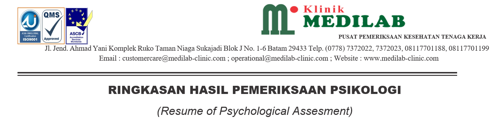

| Nomor: | - |
| Nama Peserta: | - |
| Nama Fasyankes/Lembaga layanan psikologi: | - |
| Alamat Fasyankes/Lembaga layanan psikologi: | - |
| Tgl. Pemeriksaan: | - |
| ASPEK YANG DINILAI | URAIAN | KATEGORI | |||||
|---|---|---|---|---|---|---|---|
| R | K | C | B | T | |||
| A | Logika Berpikir | Kemampuan untuk berpikir secara logis dan sistematis | |||||
| B | Daya Analisa | Kemampuan untuk melihat permasalahan dan memahami hubungan sebab akibat | |||||
| C | Kemampuan Numerikal | Kemampuan untuk berpikir praktis dalam memahami konsep angka dan hitungan | |||||
| D | Kemampuan Verbal | Kemampuan untuk memahami konsep dan pola dalam bentuk kata-kata serta mengekspresikan gagasan secara verbal | |||||
| KETERANGAN: R: Rendah K: Kurang C: Cukup B: Baik T: Tinggi | |||||||
| KESIMPULAN: - |
|||||||
| ASPEK YANG DINILAI | URAIAN | KATEGORI | |||||
|---|---|---|---|---|---|---|---|
| R | K | C | B | T | |||
| A | Orientasi Hasil | Kemampuan untuk mempertahankan komitmen untuk menyelesaikan tugas secara bertanggung jawab dan memperhatikan keterhubungan antara perencanaan dan hasil kerja | |||||
| B | Fleksibilitas | Kemampuan untuk menyesuaikan diri dalam menghadapi permasalahan | |||||
| C | Sistematika Kerja | Kemampuan untuk merencanakan hingga mengorganisasikan cara kerja dalam proses penyelesaian pekerjaannya | |||||
| KETERANGAN: R: Rendah K: Kurang C: Cukup B: Baik T: Tinggi | |||||||
| KESIMPULAN: - |
|||||||
| ASPEK YANG DINILAI | URAIAN | KATEGORI | |||||
|---|---|---|---|---|---|---|---|
| R | K | C | B | T | |||
| A | Motivasi Berprestasi | Kemampuan untuk menunjukkan prestasi dan mencapai target | |||||
| B | Kerja Sama | Kemampuan untuk menjalin, membina dan mengoptimalkan hubungan kerja yang efektif demi tercapainya tujuan bersama | |||||
| C | Keterampilan Interpersonal | Kemampuan untuk menjalin hubungan sosial dan mampu memahami kebutuhan orang lain | |||||
| D | Stabilitas Emosi | Kemampuan untuk memahami dan mengontrol emosi | |||||
| KETERANGAN: R: Rendah K: Kurang C: Cukup B: Baik T: Tinggi | |||||||
| KESIMPULAN: - |
|||||||
| ASPEK YANG DINILAI | URAIAN | KATEGORI | |||||
|---|---|---|---|---|---|---|---|
| R | K | C | B | T | |||
| A | Pengembangan Diri | Kemampuan untuk meningkatkan pengetahuan dan menyempurnakan keterampilan diri | |||||
| B | Mengelola Perubahan | Kemampuan dalam menyesuaikan diri dengan situasi yang baru | |||||
| KETERANGAN: R: Rendah K: Kurang C: Cukup B: Baik T: Tinggi | |||||||
| KESIMPULAN: - |
|||||||
| Tanggal Date |
: - |
| Tanda tangan Signature |
:
|
| Nama Psikolog Psychologist Name |
: Aribowo Abdurrahman, S.Psi, MM, Psikolog |
| Nomor STR/SIK Registration Number |
: HS00000214782376 |
| Nomor SIPP/SIPPK Licence Number |
: NR21712508004622 |